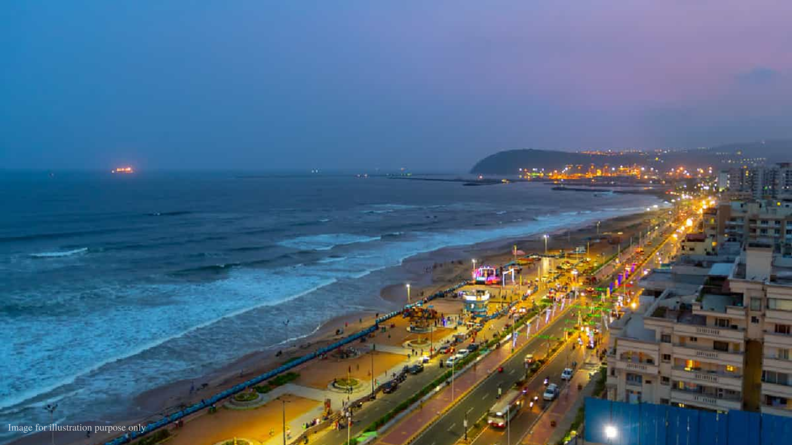

Visakhapatnam, also commonly known as Vizag, is one of the oldest port cities in the country. Situated in the heart of Andhra Pradesh, Visakhapatnam is known for its picturesque beaches and serene landscape, as well as a rich cultural past, which makes it an ideal spot for a fantastic coastal vacation.
hi guys